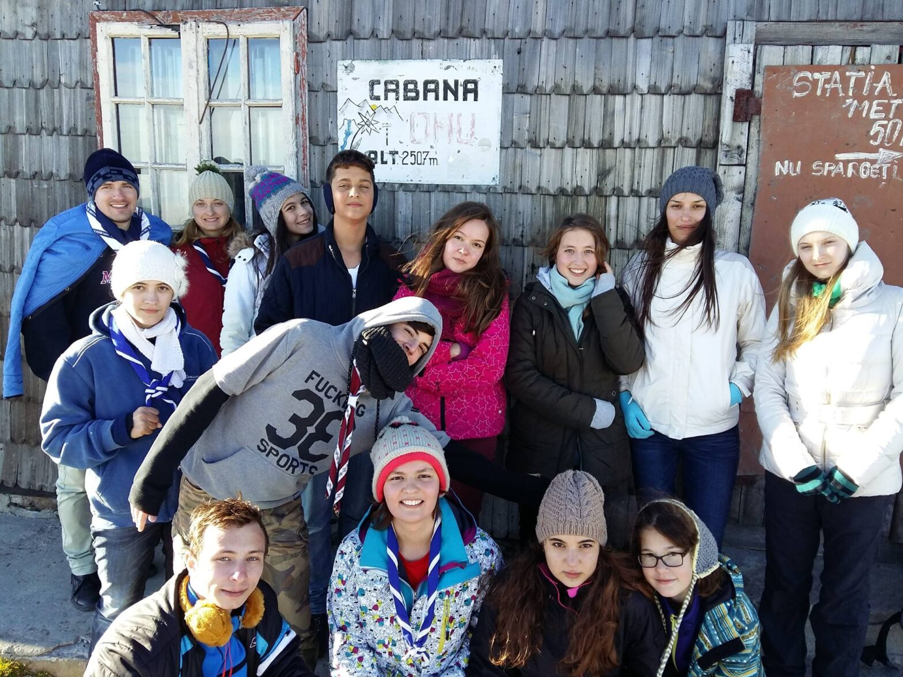

Poveștile toamnei: Operațiunea „Bulgăre de Aur"

23.10.2015. 15 persoane.
Am plecat în hike’ul nostru de toamnă, numit şi „Bulgăre de Aur”. Aceleaşi obiceiuri : tren personal de la ora 6:20, rucsacii frumos aranjaţi, îmbrăcaţi exemplar… ce mai? Ca la carte!
Am ajuns în Buşteni, de unde am luat telecabina până la Babele – ceva teamă de înălţime făcându-şi simţită prezenţa printre cercetaşi, dar când îl ai pe GMK lângă tine uiţi uşor de ea. Apoi ne-am continuat drumul către Crucea Caraiman. Nici uşor, dar nici prea greu, însă ce să vezi când am ajuns? O privelişte ca din rai pe care ai putea sa o ţii ca wallpaper mult şi bine, aşa cum am şi făcut. Drumul nostru a continuat spre Vârful Coştila, locul în care ne-am rezolvat câteva treburi legate de cooperare şi coordonare. Avem nevoie şi de acestea, nu? Uşor, uşor am pornit sper destinaţia finală pentru această zi – Vârful Omu. 2507 m. Sună bine, nu? Stai să vezi şi aici ce privelişte, dar şi ce drum şi ce vânt… toate una peste alta, nu ai cum să nu te simţi mândru când te uiţi înapoi la drumul pe care l-ai parcurs.
Aşadar, am ajuns şi noi la Vârful Omu. Check ✓. Ne cazăm – dacă se poate spune aşa. Am dormit la refugiul de pe acest vârf. Mai înghesuiţi puţin, însă când vântul e în toi, cuvântul ăsta devine o alinare. Sau nu… acum depinde de circulaţia sângelui fiecăruia. Revenind. După o noapte în care ne-am jucat „Lupu Garu”, în care ne-am trezit pe rând pentru că ne era sete, în care cineva se găsea să sforăie – şi, ghiciţi, nu era niciunul dintre lideri!, după toate acestea, a venit şi dimineaţa. Toate bune şi frumoase. Cine deschide primul uşa? Cine are curaj? Ăla eu, ăla eu? No bine…sincer nu mai ştiu cine a deschis pentru că încă eram adormită pe jumătate, însă cum uşa fu deschisă toata lumea : ‘’uaaaaaaaaa’’. Ce e dom’le? Eh, să zicem că a cam burniţat azi-noapte şi acum totul e alb. O privelişte ca în filmul Frozen… şi ca în poezia lui Labiş: ”Totu-i alb în jur cât vezi.” După ce am mâncat, am vizitat şi staţia de meteo de lângă, unde am aflat cum şi de câte ori se fac măsurători .
Acum e acum. Mai stăm să admirăm sau ne continuăm drumul? Cred că ştiţi şi voi ce am ales, dar ce am făcut…J Cu inima în dinţi am plecat spre Cabana Diham împreună cu alţi câţiva turişti de care ne-am separate ulterior pe drum. Frig, vânt, ceaţă… s-a cam dus atmosfera aia de Frozen. Însă pe parcurs ce coboram începea să se încălzească: mai dă jos o glugă, încă una şi încă una, dă jos şi căciula şi fularul…interesantă treabă. Am mers şi am mers şi tot am mers – drumul ăsta parcă nu se mai termina. Totuşi trebuie să-l facem, nu? Aşa că dacă nu puteai să te opreşti din mers, începeai să dai din gura ”dar cât mai avem? dar de ce? nu puteam să rămânem pe Vârful Omu? mamăă Adi, ăsta chiar că se numeşte hike!”.
Într-un final, seara mai precis, am ajuns la Cabană. Care e primul lucru pe care l-am făcut? Aşa e. Am mâncat mămăligă cu brânză şi am băut Coca-Cola. N-ai ce să faci! Poftele românilor. Aici am avut noorocul de baie si apă caldă şi timp de o oră asta am tot făcut. Reîmprospătaţi şi gata de culcare, am zis totuşi să facem o analiză asupra zilei ce tocmai a trecut. Am râs, am mai plâns de la râs, am mai râs de la plâns, am mai adormit pe rând, însa ajungând la concluzii importante. Care? Ei, astea rămân între noi – nu se dă totul afară din casă. Ne-am culcat. Cel puţin am vrut, pentru că am stat la taclale. Taclale cu folos să ştiţi! De-abia după asta am adormit…
Şi încă o dimineaţă plină de viaţă. Haha! Ce glumă bună. Aveam o febra musculară de nedescris, însă care trecea când priveam pe fereastra din camera noastră. Tot vă zic de privelişte, nu? Înseamnă că v-aţi dat seama de una dintre pasiunile unui cercetaş. Ce e mai frumos dacă nu priveliştea de la munte, mai ales după un efort zdravăn? Pasiuni ca asta greu dispar. Ăsta e un lucru bun!
Am plecat, aşadar, înapoi acasă. Pe jos, mergând, văietându-ne puţin, părându-ne rău că plecăm, părându-ne bine că ajugem acasă… amalgam de sentimente. Însă ce frumos a fost, dom’le! Până am aşteptat trenul, am făcut şi o vizită prietenului nostru Mega Image pentru a ne desfăta cu nişte dulciuri. Meritam, nu de alta !
25.10.2015. Înapoi în trenul nostru personal, însă de data aceasta mai murdari decât am venit. Era culmea să fie invers totuşi! Însă nu vreau sa pun accent pe asta. Ştiţi ce contează de fapt? Contează că am reuşit să clădim relaţii puternice acolo unde se clătinau, că am învăţat că „toţi pentru unul şi unul pentru toţi” nu e doar o zicală, că fiecare mililitru de apă contează, că trebuie să ne ascultăm liderii… şi părinţii – după cum zicea Sonia… şi cel mai important: că, dacă vrei, totul e posibil!
Gata oricând!
Valentina Petre